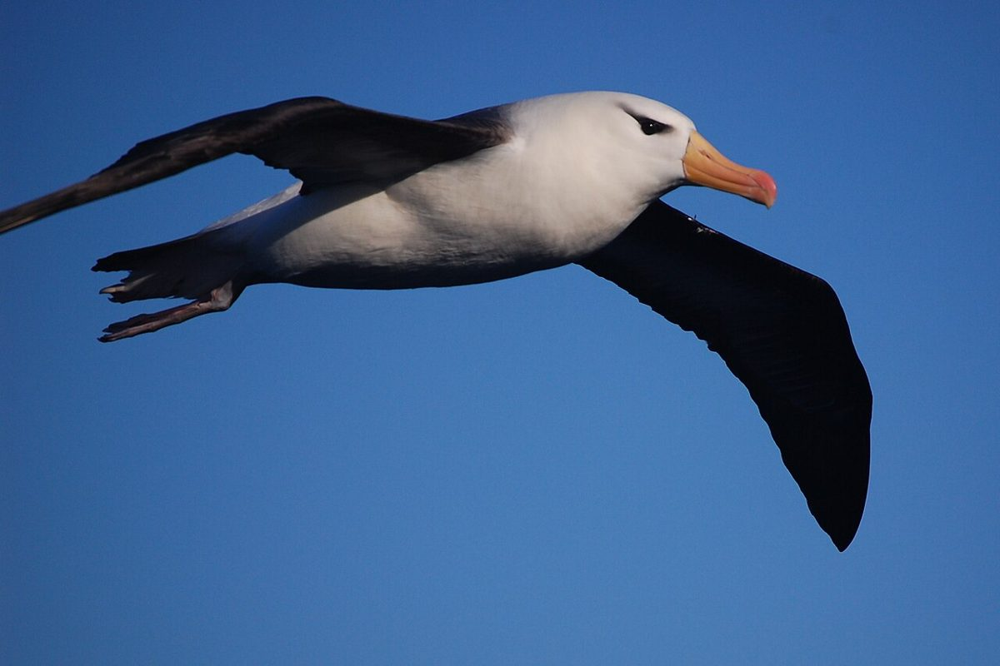
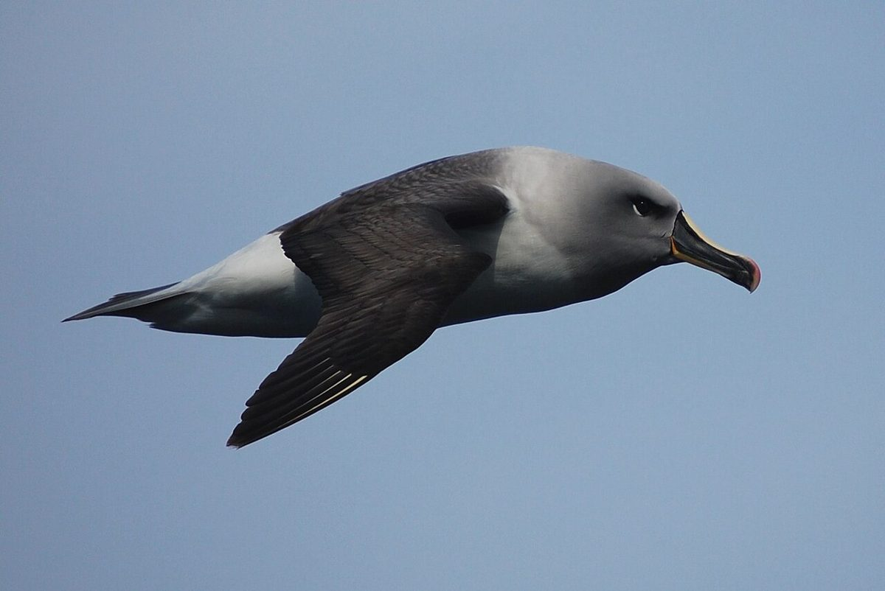
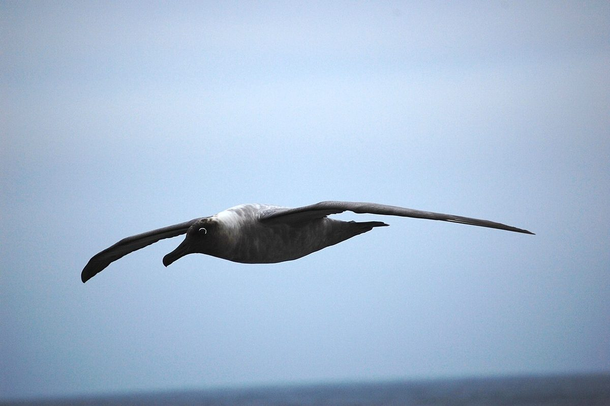

02 上昇
店のこと
お店について確認できているのは、所在地とInstagramのアカウントだけです。
このページの「想像してみる」部分は、制作側が想像して書いたものです。お店の実際の様子・考え・メニューとは関係がありません。
確認できていること
- 店名は「Cafe Albatross」、業種はカフェ
- 所在地は岐阜県土岐市泉町久尻2-1 コハクビル1階
- 電話番号はなし。連絡はInstagramから
- 営業時間・定休日・メニュー・価格・ご予約・駐車場は準備中

想像してみる
「Albatross」という名前から
由来は分かりません。制作側は、遠くから渡ってきた鳥が羽を休めるように、ひと息つける場所なのかもしれない、と想像しました。たとえば、飲み物を前にして気持ちを整える。そんな時間を思い浮かべています(実際のお店の姿ではありません)。



表記のこと
所在地の表記について
住所には「コハクビル1階」とあります。確認できているのはこの表記だけで、それ以上のことは分かりません。このサイトの配色(深い海の色と琥珀に似た色)は、制作側が屋号から連想して決めたもので、お店の意図ではありません。